컴퓨터활용능력-1급 (2010-03-21 기출문제)
1과목: 컴퓨터 일반
1. 다음 중 인터넷과 관련하여 FTP(File Transfer Protocol) 서비스에 관한 설명으로 옳지 않은 것은?
- 다른 컴퓨터가 접속하면 파일의 업로드와 다운로드 서비스를 제공하는 컴퓨터를 FTP 클라이언트라고 한다.
- FTP 서비스를 이용하면 다른 컴퓨터로부터 파일을 다운로드하는 것 뿐만 아니라 업로드하는 것도 가능하다.
- FTP는 인터넷에 파일을 전송하기 위한 프로토콜이다.
- 계정없이 접속할 수 있는 FTP 서버를 Anonymous FTP 서버라고 한다.
(정답률: 48%)

2. 다음에서 설명하는 용어로 알맞은 것은?
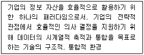
- database marketing
- data warehouse
- data verify
- data switching
(정답률: 66%)
3. 다음 중 한글 Windows XP에서 파일이나 폴더 또는 프린터의 공유 기능에 관한 설명으로 옳지 않은 것은?
- 공유된 폴더의 아이콘에는 손 모양의 그림이 추가로 표시된다.
- 공유된 폴더에 대한 공유 이름을 부여할 수 있다.
- 프린터는 네트워크 프린터의 경우에만 공유를 설정할 수 있다.
- 네트워크 설정 마법사를 사용하여 자동으로 파일 및 프린터를 공유하거나 공유하지 않을 수 있다.
(정답률: 63%)
4. 다음 중 한글 Windows XP에서 사용하는 파일 시스템의 하나인 NTFS에 대한 설명으로 옳지 않은 것은?
- FAT 또는 FAT32보다 강력하며 다른 중요한 보안 기능뿐만 아니라 Active Directory를 호스트하는데 필요한 기능을 포함하고 있다.
- 파일 및 폴더에 대한 엑세스 제어를 유지하고 제한된 계정을 지원하려면 NTFS를 사용해야 한다.
- FAT나 FAT32 파일 시스템에서 지원되지 않는 더 큰 용량의 디스크에 더 적합한 파일 시스템이다.
- FAT 파일 시스템을 사용하는 윈도우 98/Me와 다중 부팅을 하거나 데이터 호환이 가능하다.
(정답률: 56%)
5. 다음 중 인터넷에서 사용하는 TCP/IP 프로토콜에서 TCP에 해당하는 설명으로 옳지 않은 것은?
- TCP는 메시지를 송수신자의 주소와 정보를 묶어서 패킷(Packet) 단위로 나누어 데이터를 전송한다.
- TCP는 전송 데이터의 흐름을 제어하고 데이터의 에러 유무를 검사한다.
- TCP는 패킷의 주소를 해석하고 경로를 결정하여 다음 호스트로 전송한다.
- TCP는 OSI 7계층에서 전송(Transport) 계층에 해당된다.
(정답률: 57%)
6. 다음 내용은 무엇에 대한 설명인가?
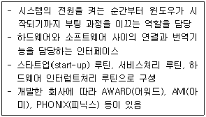
- BIOS
- LOCAL BUS
- MAINBOARD
- BIU(Bus Interface Unit)
(정답률: 74%)
7. 다음 중 컴퓨터 프로그래밍 언어와 관련하여 객체 지향 언어(Object-Oriented Programming Language)의 특징으로 옳지 않은 것은?
- 은닉화(Encapsulation)
- 구조화(Structured)
- 상속(Inheritance)
- 자료 추상화(Data Abstraction)
(정답률: 44%)
8. 다음 중 멀티미디어 그래픽과 관련하여 비트맵(Bitmap) 방식에 관한 설명으로 옳지 않은 것은?
- 비트맵은 실물 사진이나 복잡하고 세밀한 이미지 표현에 적합하다.
- 픽셀(Pixel) 단위의 단순한 매트릭스로 구성되어 있는 이미지를 표현하는 방식이다.
- 벡터(Vector) 방식의 이미지를 저장했을 때보다 많은 메모리를 차지한다.
- 비트맵 방식의 이미지를 확대하면 테두리가 거칠어지는 현상이 없이 매끄럽게 이미지를 표현할 수 있다.
(정답률: 70%)
9. 윈도우즈 XP에서는 보안 부분이 강화되어 권한이 없는 사용자가 네트워크나 인터넷을 통해 들어오는 것을 제한하는 방화벽 기능이 강화되었다. 다음 중 방화벽 고급기능 설정에 해당하는 설명중 거리가 먼 것은?
- 네트워크 연결 설정 : 인터넷 사용자가 엑세스할 수 있는 네트워크에 실행되는 서비스 별로 방화벽 사용 여부를 지정한다.
- 보안 로깅 : 컴퓨터에 대해 성공한 연결 시도와 실패한 연결 시도를 로그 파일에 저장하게 한다.
- 기본 설정 : 사용자 이름과 암호를 등록하여 개인별로 방화벽 사용 여부를 지정한다.
- ICMP : ICMP(Internet Control Message Protocol)로 네트워크상의 컴퓨터들 사이에 오류 및 상태 정보를 공유 할수 있도록 설정한다.
(정답률: 42%)
10. 다음 중 한글 Windows XP의 네트워크 연결과 관련하여 [로컬 영역 연결 속성] 창에서 할 수 있는 것으로 옳지 않은 것은?(문제 오류로 실제 시험장에서는 1,2번이 정답 처리 되었습니다. 여기서는 1번을 정답 처리 합니다.
- 로컬 영역 연결의 사용 안 함을 설정할 수 있다.
- 인터넷 프로토콜(TCP/IP) 등의 네트워크 구성 요소를 설치 및 제거할 수 있다.
- 네트워크의 연결 상태를 작업 표시줄의 알림 영역에 표시 여부를 설정할 수 있다.
- 네트워크 연결에 사용된 장치를 확인할 수 있다.
(정답률: 75%)
11. 다음 중 비밀키 암호화 기법에 해당되지 않는 것은?
- 사용자의 증가에 따라 관리해야 하는 키의 수가 상대적으로 많아진다.
- 대표적으로 DES(Data Encryption Standard)
- 암호화와 복호화의 속도가 빠르다.
- 이중 키 방식이므로 알고리즘이 복잡하다.
(정답률: 69%)
12. 다음 설명하는 프로토콜은 어느 것인가?
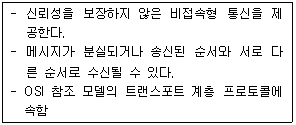
- TCP
- IP
- UDP
- FTP
(정답률: 42%)
13. 다음 중 XML(eXtensible Markup Language) 문서에 설명으로 거리가 먼 것은?
- 태그(Tag)와 속성을 사용자가 정의할 수 있으며 문서의 내용과 이를 표현하는 방식이 독립적이다.
- HTML과는 달리 DTD(Document Type Declration)가 고정되어 있지 않으므로 논리적 구조를 표현할 수 있는 유연성을 가진다.
- XML은 HTML에 사용자가 새로운 태그(Tag)를 정의할 수 있는 기능이 추가되었다.
- 확장성 생성 언어라는 뜻으로 기존의 HTML의 단점을 보완하여 비구조화 문서를 기술하기 위한 국제 표준 규격이다.
(정답률: 44%)
14. 다음 중 멀티미디어와 관련하여 그래픽 처리 기법에 관한 설명으로 옳은 것은?
- 제한된 색상을 조합하여 복잡한 색이나 새로운 색을 만드는 작업을 필터링(Filtering)이라고 한다.
- 3차원 에니메이션을 만드는 과정 중의 하나로 물체의 모형에 명암과 색상을 입혀서 사실감을 더해 주는 작업을 랜더링(Rendering)이라고 한다.
- 2개의 이미지를 부드럽게 연결하여 변환하거나 통합하는 작업을 모델링(Modeling)이라고 한다.
- 이미지의 가장자리 부분에 발생된 계단 현상을 제거하는 것을 디더링(Dithering)이라고 한다.
(정답률: 77%)
15. 다음 중 컴퓨터 기억장치와 관련하여 캐시 메모리(Cache Memory)에 관한 설명으로 옳지 않은 것은?
- 비 휘발성 메모리로 구성되며 컴퓨터와 CPU 내부의 고속 액세스가 가능한 기억 장치이다.
- 캐시 메모리는 DRAM보다 접근 속도가 빠른 SRAM 등이 사용되며 주기억장치보다 소용량으로 구성된다.
- 속도가 빠른 중앙 처리장치와 상대적으로 속도가 느린 주기억장치 사이에 위치하며 컴퓨터 처리의 속도를 향상시키는 역할을 한다.
- 캐시 메모리의 효율성을 적중율(Hit Ratio)로 나타낼 수 있으며, 적중률이 높을수록 시스템의 전체적인 속도가 향상된다.
(정답률: 58%)
16. 다음 중 한글 Windows XP에서 [휴지통]에 관한 설명으로 옳지 않은 것은?
- 하드디스크의 파일이나 폴더를 <Delete>키를 눌러서 삭제하면 [휴지통]에 넣어지며, [휴지통] 아이콘은 빈 휴지 통에서 가득 찬 휴지통 아이콘으로 바뀐다.
- [휴지통]에 보관된 실행형 파일은 복원이 가능하며 복원하기 전에도 실행시킬수 있다.
- Windows에서는 각각의 파티션이나 하드 디스크에 [휴지통]을 하나씩 할당한다.
- [휴지통]에 있는 항목은 사용자가 컴퓨터에서 영구적으로 삭제하기 전까지 휴지통에 그대로 있으며, 사용자가 삭제를 취소하거나 원래 위치로 복원할 수 있다.
(정답률: 73%)
17. 한 대의 프린터를 가지고 여러 대의 PC에서 프린트를 하려고 한다. 이때 올바른 프린터 공유 방법은?
- [제어판]-[프린터 및 하드웨어]-[프린터 추가]-[로컬 프린터 선택]
- [제어판]-[프린터 및 팩스]-[프린터 선택]-[공유]
- [제어판]-[프린터 및 하드웨어]-[프린터 추가]-[포트 선택]
- [제어판]-[공유]-[프린터를 선택]-[기본 프린터 설정]
(정답률: 62%)
18. 다음 중 인터넷과 관련하여 웹 브라우저에서 쿠키(Cookie)에 관한 설명으로 옳은 것은?
- 자주 방문하는 웹 페이지를 따로 저장하고 있다가 사용자가 다시 그 페이지를 요구하면 미리 저장한 페이지를 빠르게 보여주는 기능이다.
- 인터넷 상에서 특정 사이트로 동시에 많은 사용자들이 접속하는 것을 방지하기 위하여 같은 내용을 복사해 놓은 사이트이다.
- 인터넷 사용자에 대한 특정 웹 사이트의 접속 정보를 저장하고 있는 파일이며 인터넷 접속시 매번 아이디와 비밀번호를 입력 하지 않아도 자동으로 로그인 되게 할 수 있다.
- 웹 브라우저만으로는 실행할 수 없는 기능을 보완하기 위해 추가로 설치하여 사용하는 프로그램이다.
(정답률: 56%)
19. 다음 중 한글 Windows XP에서 시스템에 설치되어 있는 [글꼴]에 대한 설명으로 옳지 않은 것은?
- 글꼴 파일은 png 또는 txt의 확장자를 가지고 있다.
- C: \Windows\Fonts 디렉토리에 글꼴이 설치되어 있다.
- 설치되어 있는 글꼴을 폴더에서 제거할 수 있다.
- 트루타입 글꼴 파일도 있고 여러 가지 트루타입의 글꼴을 모아놓은 글꼴 파일도 있다.
(정답률: 64%)
20. 다음 중 정보 통신망 구성 형태에서 링형(Ring)에 관한 설명으로 옳은 것은?
- 모든 단말 장치가 중앙 노드에 연결되어 있는 형태이다.
- 단말 장치의 증설이나 삭제가 용이하며 회선의 양끝에는 종단 장치가 필요하다.
- 통신 회선의 길이가 다른 형태에 비해 가장 길고 전화 통신망과 같은 공중 데이터 통신망에 많이 이용된다.
- 근거리 통신망에서 주로 채택하여 사용하며 양방향으로 데이터 전송이 가능하다.
(정답률: 61%)
2과목: 스프레드시트 일반
21. 다음 배열 수식 및 함수에 대한 설명으로 옳지 않은 것은?
- 배열 수식에서 사용되는 상수의 숫자로는 정수, 실수, 지수 형식의 숫자를 사용할 수 있다.
- MDETERM 함수는 배열로 저장된 행렬에 대한 역행렬을 산출한다.
- PERCENTILE 함수는 범위에서 k번째 백분위수 값을 구하며, 이때 K는 0에서 1까지 백분위수 값 범위이다.
- FREQUENCY 함수는 값의 범위 내에서 해당 값의 발생 빈도를 계산하여 세로 배열 형태로 나타낸다.
(정답률: 53%)
22. 다음 중 [B5]셀에 적용해야 할 사용자 지정 셀 서식으로 올바른 것은?
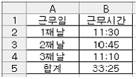
- h:mm
- hh:mm
- [h]:mm
- h:mm;@
(정답률: 47%)
23. [데이터]-[외부 데이터 가져오기]-[데이터 범위 속성]에서 설정 할 수 없는 것은?
- 쿼리 정의
- 새로 고침 옵션
- 데이터 서식 및 레이아웃
- 인접한 행에 수식 자동 채우기
(정답률: 40%)
24. 아래 그림을 참조하여 다음의 사용자 정의 함수식을 구성 하는 인수나 표시형식의 조합으로 적당한 것은?(단, 매출총이익률은 매출총이익을 매출액으로 나눈 값을 백분율로 표시한 값이며, 매출총이익은 매출액에서 매출원가를 차감한 금액임)
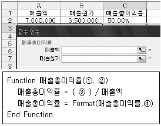
- 매출액, 매출원가, 매출액-매출원가, "0.00%"
- 매출액, 매출원가, 매출총이익-매출원가,0.00%
- 매출액, 매출원가, 매출원가, 0.00%
- 매출액, 매출원가, 매출총이익, "0.00%"
(정답률: 47%)
25. 다음 중 원형 차트에서 '데이터 레이블'의 레이블 내용으로 설정할 수 없는 것은?
- 계열 이름
- 항목이름
- 백분율
- 차트 제목
(정답률: 45%)
26. 다음 중 매크로에 대한 설명으로 옳지 않은 것은?
- 매크로 실행을 위한 바로가기 키는 엑셀에서 이미 사용하고 있는 바로가기 키를 사용할 수 없다.
- 매크로 기록 도중에 선택한 셀은 절대 참조로 기록할 수도 있고 상대 참조로 기록할 수도 있다.
- 양식 도구에 있는 명령 단추에 매크로를 지정하여 매크로를 실행할 수 있다.
- Visual Basic Editor에서 코드 편집을 통해 매크로의 이름이나 내용을 바꿀 수 있다.
(정답률: 54%)
27. 다음 중 차트에 대한 설명으로 옳지 않은 것은?
- 차트를 이용하면 데이터의 추세나 유형 등을 쉽고 직관적으로 이해할 수 있으며, 많은 양의 데이터를 간결하게 요약할 수 있다.
- 차트만 별도로 표시할 수 있는 차트 시트를 만들 수 있다.
- 그림 영역은 차트 전체를 의미하며, 바탕에 그림이나 배경 무늬를 삽입할 수 있다.
- 추세선은 특정한 데이터 계열에 대한 변화 추세를 파악 하기 위해 표시하는 선이다.
(정답률: 61%)
28. 다음 중 엑셀의 통합 문서와 워크시트에 대한 설명으로 옳지 않은 것은?
- 워크시트의 복사는 [Alt] 키를 누르면서 원본 워크시트 탭을 마우스로 이동시키면 된다.
- 통합 문서는 여러 개의 시트를 포함할 수 있으며, 최소한 한개 이상의 시트를 포함해야 한다.
- 열려 있는 모든 통합 문서의 위치와 창의 크기, 화면 위치 등의 정보를 저장하는 파일을 작업 영역 파일이라고 한다.
- 통합 문서 보호 기능을 통해 시트의 삽입, 삭제, 이름 변경, 이동, 숨기기, 숨기기 해제 등과 같은 작업을 할 수 없도록 할 수 있다.
(정답률: 52%)
29. 다음의 워크시트는 [데이터]-[표]를 이용하여 가중치에 따라 성적을 계산하는 것이다. [C4:C8] 셀에 데이터를 채우려고 할 때 아래 [표] 대화상자에서 입력되어야 할 값과 실행결과 [C4:C8]셀에 설정된 배열 수식의 쌍으로 올바르게 짝지어진 것은?(단, [C3] 셀에는 숫식 '=D2*A2'가 입력되어 있으며, [B3:C8] 셀을 지정한 후 [데이터]-[표] 메뉴를 실행한다.)
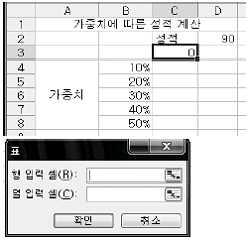
- 입력값 : [행 입력 셀]:$A$2
설정값 : {=TABLE(A2,)} - 입력값 : [열 입력 셀]:$A$2
설정값 : {=TABLE(,A2)} - 입력값 : [행 입력 셀]:$D$2
설정값 : {=TABLE(D2,)} - 입력값 : [행 입력 셀]:$A$2 [열 입력 셀]:$A$2
설정값 : {=TABLE(A2,A2)}
(정답률: 39%)
30. 다음 중 VBA에서 사용하는 용어에 대한 설명으로 옳지 않은 것은?
- 개체 : 엑셀 프로그램을 구성하는 통합 문서, 시트, 셀, 차트 및 폼을 구성하는 컨트롤 등이 모두 개체가 된다.
- 메서드 : 개체가 수행할 수 있는 동작으로 '개체명.메서드'와 같은 형식으로 표현한다.
- 속성 : 개체가 가지고 있는 고유한 성질을 의미하며 '개체명,속성 = 값'과 같은 형식으로 표현한다.
- 이벤트 : 개체에서 발생하는 사건으로 특정 사건이 발생하면 무엇을 할 것인지를 선택하는 것으로 모든 개체에 발생할 이벤트의 종류는 동일하다.
(정답률: 61%)
31. 콤보 상자의 목록으로 현재 통합문서에 포함된 시트들의 이름을 추가하는 프로시저를 작성하려고 한다. 다음 중 (가), (나), (다)에 식으로 옳은 것은? (단, 콤보 상자의 이름은 'CB1'이며 사용자의 폼의 이름은 UForm이다.)
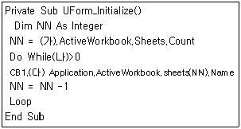
- (가) Application
(나) Workbook.Sheets.Count
(다) CB1 - (가) ActiveDocument
(나) Sheet.Count
(다) CB1.ItemCount - (가) Application
(나) NN
(다) AddItem - (가) Excel
(나) CB1.ItemCount
(다) NN
(정답률: 45%)
32. 다음 중 [시나리오 관리자]의 실행 단추에 대한 설명으로 잘못된 것은?
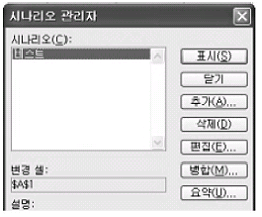
- [삭제]단추는 선택한 시나리오를 제거할 때 사용하는 것으로, '실행 취소' 단추를 이용하여 삭제된 시나리오를 복원할 수 있다.
- [편집] 단추는 선택한 시나리오를 수정할 때 사용하는 것으로, 시나리오 이름과 대상 셀의 범위를 수정할 수 있다.
- [병합] 단추는 다른 시트에 있는 시나리오를 불러와서 추가할 때 사용하는 것이다.
- [요약] 단추는 선택한 시나리오의 요약보고서나 시나리오 피벗 테이블 보고서를 작성할 때 사용하는 것이다.
(정답률: 50%)
33. 다음 워크시트에서 [A1] 셀에서 [Ctrl]키를 누른 채 채우기 핸들을 이용하여 드래그 했을 때 [C1] 셀에 표시되는 값은?
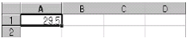
- 29.5
- 31.5
- 29.7
- 49.5
(정답률: 54%)
34. 다음 중 엑셀의 인쇄에 관한 설명으로 옳지 않은 것은?
- 워크 시트의 일부만 인쇄 영역으로 설정할 수 있다.
- 인쇄되는 시작 페이지의 번호를 지정할 수 있다.
- 눈금선, 행/열 머리글등을 인쇄하도록 설정할 수 있다.
- [기본] 보기 상태에서 페이지 구분선과 페이지 번호가 나타난다.
(정답률: 59%)
35. 인쇄 시 테두리나 그래픽 등을 생략하고 데이터만 인쇄 하려고 할 때 설정해야 할 것으로 올바른 것은?
- 눈금선
- 행/열 머리글
- 간단하게 인쇄
- 흑백으로
(정답률: 74%)
36. 다음 중 주어진 수식에 대한 결과값이 옳지 않은 것은?
- =REPLACE("monkey",4,6,"ey") → money
- =ISERROR(4/0) → FALSE
- =FIXED(9876.54321,1) → 9,876.5
- =TEXT("2010-3-21","mmm dd, yy") → Mar 21, 10
(정답률: 43%)
37. 다음 중 변경된 내용을 저장하지 않고 현재의 'Table01.xls'파일을 닫는 매크로는 어느 것인가?
- Workbooks("Table01.xls").SaveAs
- Workbooks("Table01.xls").Close
- Workbooks("Table01.xls").Close BeforeSave=False
- Workbooks("Table01.xls").Close BeforeSave=True
(정답률: 41%)
38. 다음 조건을 이용하여 사용자 지정 표시 형식을 설정할 경우 옳은 것은?
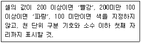
- <빨강>[>=200]#,##0;<파랑>[>=100]#,##0;#,##0
- [빨강][>=200]#,##0;[파랑][>=100]#,##0;#,##0
- [빨강][>=200]#,##0.0;[파랑][>=100]#,##0.0;#,##0.0
- <빨강>[>=200]#,##0.0;<파랑>[>=100]#,##0.0;#,##0.0
(정답률: 60%)
39. 다음 워크 시트에서 종기가 3월인 레코드를 검색하려고 할 때 고급필터의 조건으로 올바르게 표현된 것은?
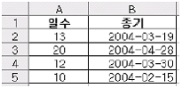
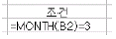
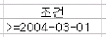
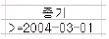
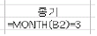
(정답률: 54%)
40. 다음과 같은 시트에서 [A8] 셀에 아래의 수식을 입력했을 때 계산 결과로 올바른 것은?
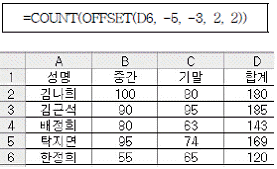
- 4
- 1
- 120
- 74
(정답률: 36%)
3과목: 데이터베이스 일반
41. [학생]테이블에서 '학번' 필드를 기본 키로 설정하려 하였더니 다음과 같은 내용의 오류 메세지가 나타났다. 중복된 학번을 찾는 질의로 가장 적절한 것은?
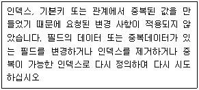
- Select 학번 From 학생 Having Count(*)>1
- Select 학번 From 학생 Group by 학번 Where Count(*)>1
- Select 학번 From 학생 Where Count(*)> 1 Group by 학번
- Select 학번 From 학생 Group by 학번 Having Count(*)>1
(정답률: 50%)
42. 그림과 같이 <주문상세> 폼에서 '개수' 필드의 합계를 계산하여 표시하는 컨트롤에 대한 설명으로 옳지 않은 것은?
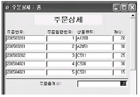
- 컨트롤의 이름은 결과에 영향을 미치지 않는다.
- 컨트롤의 원본 속성을 'Sum([개수])'로 설정한다.
- 컨트롤은 폼 바닥글 영역에 위치한다.
- 컨트롤은 텍스트 상자를 사용한다.
(정답률: 32%)
43. 폼의 작성 과정에 대한 다음 설명 중 바르지 못한 것은?
- 폼이 여러 레코드를 표시하게 하기 위해 '기본 보기'속성을 '연속폼'으로 설정하였다.
- 폼이 실행되자마자 [분류] 테이블을 사용하도록 하기 위해 다음과 같이 이벤트 프로시저를 작성했다.
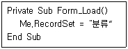
- 학과별 자격 취득자수를 집계하여 보여주는 폼의 '레코드 원본' 속성을 다음과 같이 지정했다. 단, 자격취득 테이블은 (취득일, 학번, 학과명, 자격증코드, 자격증명)으로 구성되어 있다.
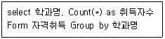
- 'cmb조회' 명령 단추를 클릭하면 이름 필드의 값과 'txt조회' 컨트롤에 입력된 문자열이 일치하는 레코드를 표시하도록 하기 위해 다음과 같이 이벤트 프로시저를 작성하였다.
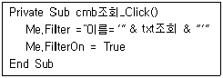
(정답률: 30%)
44. 다음 Do~Loop 반복문 수행 후 변수 S의 값은?
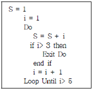
- 11
- 10
- 7
- 4
(정답률: 31%)
45. 다음과 같은 보고서를 작성하기 위해서는 어떠한 기준으로 정렬 및 그룹화를 하는 것이 가장 적절한가?(실제 시험장에서는 키, 몸무게, 생년월일 자료가 있었지만 그림파일이 너무 커서 필요한 화면만 잘랐습니다.)
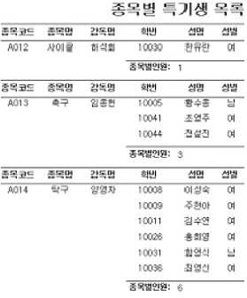
- 종목코드와 성명을 기준으로 오름차순으로 정렬하고 종목코드를 기준으로 그룹화한다.
- 성명과 종목코드를 기준으로 오름차순으로 정렬하고 성명을 기준으로 그룹화한다.
- 종목명과 학번을 기준으로 오름차순으로 정렬하고 학번을 기준으로 그룹화한다.
- 종목명과 학번을 기준으로 오름차순으로 정렬하고 종목명을 기준으로 그룹화한다.
(정답률: 57%)
46. [제품] 테이블의 '분류코드'는 [분류] 테이블의 '분류코드'를 참조한다. 분류코드 체계를 변경하기 위해 분류코드 필드 값을 변경하려 하였더니 다음과 같은 오류 메세지가 나타났다. 두 테이블에 변경된 내용을 적용하기 위한 가장 적절한 방법은?(메세지 내용 : 관련 레코드가 ‘제품’ 테이블에 있으므로 레코드를 삭제하거나 변경할 수 없습니다.)
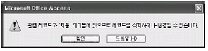
- 두 테이블간의 관계를 해제하고 [분류] 테이블의 '분류코드' 필드 값을 수정한다.
- [제품] 테이블의 '분류코드'를 먼저 수정한 후, [분류] 테이블의 '분류코드' 필드 값을 수정한다.
- 관계 편집 창에서 '관련 필드 모두 업데이트'를 체크한 후, [분류] 테이블의 '분류코드' 필드 값을 수정한다.
- 관계 편집 창에서 '관련 필드 모두 업데이트'를 체크한 후, [제품] 테이블의 '분류코드' 필드 값을 수정한다.
(정답률: 37%)
47. 다음에서 설명하는 데이터베이스 시스템의 구성요소로 가장 적절한 것은?
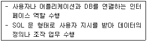
- 데이터베이스 관리자(DBA, Database Administrator)
- 데이터베이스 관리시스템(DBMS, Database Management System)
- 데이터 사전(DD, Data Dictionary)
- 데이터 조작어(DML, Data Manipulation Language)
(정답률: 41%)
48. 학생 목록을 출력하는 보고서에서 다음과 같이 학생 레코드 사이에 점선을 표시하여 구분하고자 한다. 보고서 디자인 화면에서 점선을 추가할 위치로서 적절한 곳은?
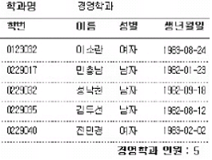
- 보고서 머리글
- 그룹 머리글
- 본문
- 그룹 바닥글
(정답률: 61%)
49. 다음과 같은 SQL 문에 대한 설명으로 옳지 않은 것은?
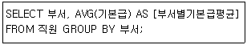
- GROUP BY 절을 생략할 수 있으며, 생략하여도 질의 결과는 같다.
- SELECT 부서, sum(기본급)/count(기본급) AS [부서별기본급평균] FROM 직원 GROUP BY 부서; 질의와 항상 동일한 결과를 나타낸다.
- 표시되는 레코드의 수와 관계 없이 질의의 결과 필드수는 항상 2개이다.
- 질의의 결과는 반드시 '부서'의 개수(부서 필드의 값의 종류수)만큼의 레코드를 표시한다.
(정답률: 38%)
50. 회원(회원번호, 이름, 나이, 주소)테이블에서 회원번호가 555인 회원의 주소를 '부산'으로 변경하는 질의문으로 옳은 것은?
- UPGRADE 회원 set 회원번호=555 where 주소='부산'
- UPGRADE 회원 set 주소='부산' where 회원번호=555
- UPDATE 회원 set 회원번호=555 where 주소='부산'
- UPDATE 회원 set 주소='부산' where 회원번호=555
(정답률: 52%)
51. 다음 중 입력마스크가 'L&A'로 설정되어 있을 때 입력데이터로 적절한 것은?
- 123
- A1B
- AB
- 1AB
(정답률: 56%)
52. 다음에서 설명하는 폼의 이벤트로 가장 적절한 것은?
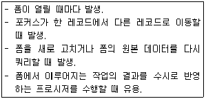
- Current
- Open
- Activate
- Load
(정답률: 31%)
53. 보고서는 데이터를 사용자가 원하는 형태로 출력해 주는 역할을 수행한다. 다음 중 보고서에서 이용할 수 있는 레코드 원본으로 가장 적절하지 않은 것은?
- 외부의 엑셀 파일에 대한 연결 테이블
- 엑세스의 수식 작성 규칙에 맞게 [식 작성기]로 작성한 수식
- 여러 테이블이나 쿼리를 이용하여 원하는 데이터를 조회하게 해주는 SQL문
- 테이블의 내용중에서 원하는 형태의 데이터만을 조회하도록 작성해서 저장해 놓은 쿼리
(정답률: 35%)
54. 다음은 폼에 관한 설명이다. (A)와 (B)에 들어갈 알맞은 말은?
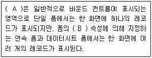
- (A) 본문 영역, (B) 기본 보기
- (A) 폼 머리글 영역, (B) 레코드 원본
- (A) 폼 머리글 영역, (B) 기본 보기
- (A) 본문 영역, (B) 레코드 원본
(정답률: 33%)
55. [부서] 테이블과 [사원] 테이블에는 아래 표와 같이 데이터가 들어 있다. [부서] 테이블의 '부서코드'는 기본키로 설정되어 있고 [사원] 테이블의 '소속부서' 필드는 [부서]테이블의 부서코드를 참조하고 있는 외래키(foreign key)이다. 다음 설명으로 옳지 않은 것은?
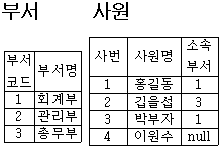
- 현재 참조무결성(referential intergrity)이 유지되고 있다.
- [사원] 테이블에서 4번 사원의 '소속부서'를 4로 바꾸면 참조무결성은 유지되지 않는다.
- [사원] 테이블에서 2번 사원을 삭제해도 참조무결성은 유지된다.
- [부서]테이블에서 2번 부서를 삭제하면 참조무결성이 유지되지 않는다.
(정답률: 44%)
56. 아래의 설명 중 SQL 문의 특징을 모두 고르시오.
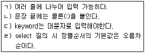
- ㄱ, ㄴ
- ㄴ, ㄷ, ㄹ
- ㄱ, ㄹ
- ㄱ, ㄷ
(정답률: 54%)
57. 다음과 같은 형식의 보고서에 대한 설명으로 바르지 못한 것은?
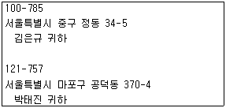
- 우편발송을 위해 편지봉투에 붙일 주소 레이블을 작성하는 보고서이다.
- 레이블 마법사를 이용하여 작성할 수 있다.
- 엑셀에 입력된 데이터를 액세스에 가져오지 않고 연결 테이블로 연결하여 레이블을 만들 수 있다.
- 보고서 속성에서 레이블을 출력할 프린터를 지정할 수 있다.
(정답률: 38%)
58. 자동 폼(Form)을 이용하여 폼을 새로 만들고자 할 때 선택할 수 있는 형식이 아닌 것은?
- 컬럼(columm) 형식
- 탭 형식
- 행(row) 형식
- 데이터 시트 형식
(정답률: 30%)
59. 다음 중 기본키(Primary Key)와 외래 키(Foreign Key)에 관한 설명으로 잘못된 것은?
- 기본 키와 외래 키는 동일한 테이블에 동시에 존재할 수 없다.
- 참조무결성이 유지되기 위해서는 외래 키 필드의 값은 참조하는 필드 값들 중 하나와 일치하거나 널(null)이어야 한다.
- 기본 키를 이루는 필드의 값은 null이 될 수 없다.
- 기본 키는 개체무결성의 제약조건을, 외래 키는 참조무결성의 제약 조건을 가진다.
(정답률: 42%)
60. 다음 쿼리에 대한 설명으로 올바른 것은?
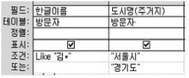
- 한글이름이 '김'으로 시작하는 레코드 중 도시명(주거지)가 '서울시'또는 '경기도'인 레코드 검색
- 한글이름이 '김'으로 시작하거나 도시명(주거지)가 '서울시' 이거나 '경기도'인 레코드 검색
- 한글이름이 '김'으로 시작하는 레코드 중 도시명(주거지)가 '서울시'이거나 한글이름과 관계없이 도시명(주거지)가 '경기도'인 레코드 검색
- 한글이름이 '김'으로 시작하는 레코드 중 도시명(주거지)가 '경기도'는 제외하고 '서울시'인 레코드 검색
(정답률: 44%)